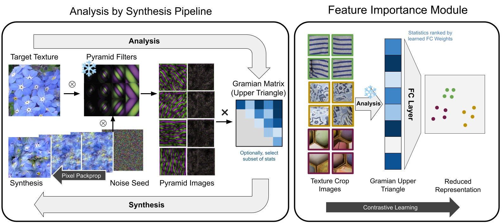
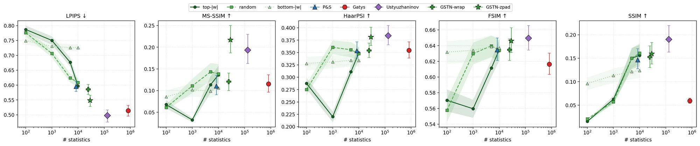
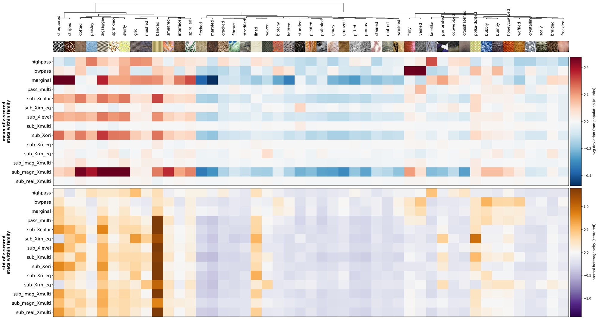
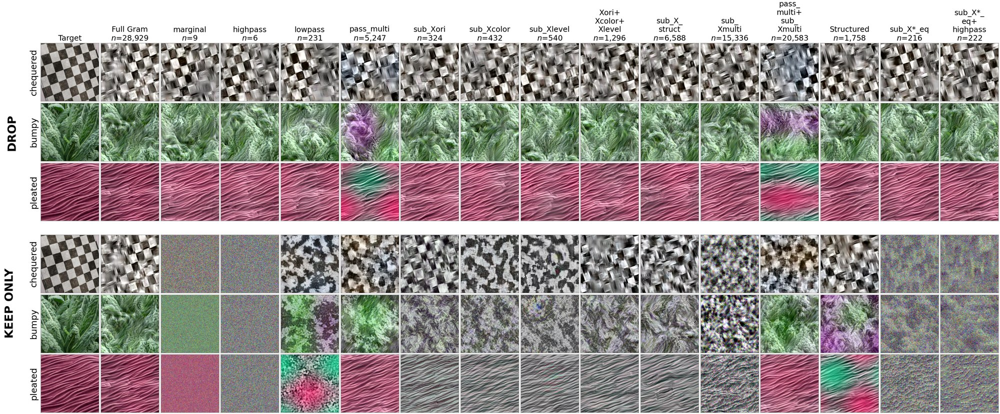
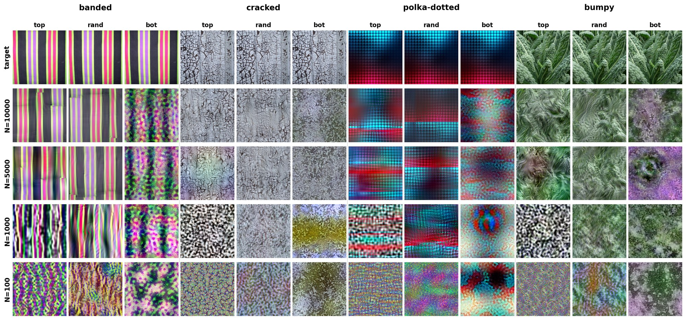
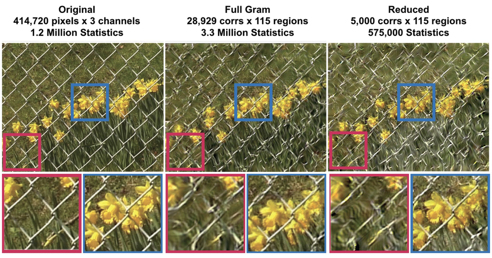
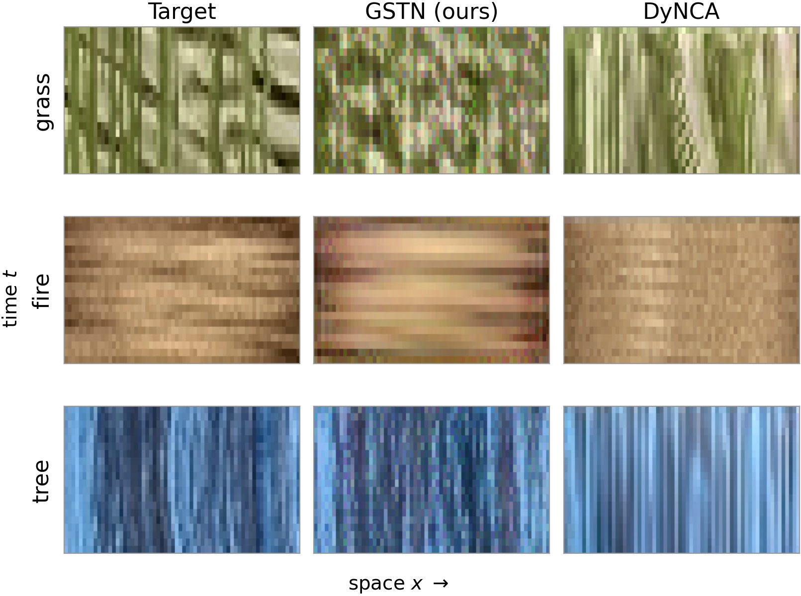

Deep networks achieve high realism in texture synthesis but often rely on opaque, over-parameterized representations that have limited direct connection to biological vision. Neuroscience-informed pyramid models are interpretable, compact, and biologically inspired, but rely on small, hand-curated statistics sets that are difficult to generalize or extend. We introduce GramStatTexNet, a hybrid analysis-by-synthesis framework that combines the multi-scale Gabor filter structure of classical models with the flexibility of Gramian-based correlations, organized into structured filter families. This structured representation enables analyses that are challenging for deep-feature methods: each statistic carries a named filter-family identity, allowing us to decompose synthesis fidelity into per-family contributions and to learn an interpretable, low-dimensional embedding that preserves perceptual texture content. We compare our framework to classical and deep texture-synthesis baselines across diverse texture categories, and on multiple perceptual metrics, highlighting the compactness and interpretability advantages of this hybrid representation, alongside competitive synthesis quality. This same framework extends naturally to peripheral textures via spatial pooling, and to dynamic textures using a spatiotemporal filter bank. GramStatTexNet provides a unified, interpretable framework for analyzing and modeling visual information with natural extensions across space, time, and eccentricity.
GSTN convolves an image with a bank of multi-scale pyramid filters at every combination of orientation, phase, scale, and color. Each filtered output is treated as a channel, and the pairwise correlations between all channels form a Gram matrix. Its upper triangle (28,929 statistics) is the texture representation. New textures are synthesized by optimizing a noise image until its statistics match the target's.

GSTN improves on the classical Portilla & Simoncelli pyramid model in most texture categories across all nine evaluation metrics. Against Gatys, GSTN wins on classical perceptual and structural metrics (FSIM, SSIM, VIF, GMSD, HaarPSI, PSD-L2) in 32–46 of 47 categories with a 30× smaller representation. Gatys leads on the deep-feature metrics (DISTS, LPIPS), which are built on the same VGG features its loss optimizes.

Every GSTN statistic is a correlation between two known filters, so the representation can be read from first principles. We group the statistics into families by which filter attributes (scale, orientation, color, phase) are shared and which differ. Structured families, where only one attribute varies, roughly match the hand-curated statistics of classical pyramid models. Unstructured families correlate filters that differ in several attributes at once.


A single 28,929×100 linear layer trained with InfoNCE groups crops from the same texture. Ranking statistics by their learned weights gives an importance ordering: the top 5,000 statistics are enough for acceptable syntheses, and the bottom-ranked ones are not. Randomly chosen subsets of the same size do even better for synthesis. The contrastive task picks statistics that discriminate between textures, while synthesis needs statistics that broadly constrain appearance. This is the classic distinction between discriminative and generative objectives.

Applying GSTN over spatial pooling regions that grow with eccentricity gives foveated syntheses like those used in peripheral-vision research. The center of gaze is rendered at high fidelity, with distortions increasing toward the edges. With the reduced 5,000-statistic set, the whole synthesis uses fewer values than the original image.

Classical pyramid statistics have no obvious counterparts in time, but a Gram matrix needs no hand-picked statistics. Swapping the spatial filters for a bank of 3D spatiotemporal Gabor filters is enough for GSTN to synthesize video textures, using the same pipeline as for images.

| Mean over 5 DynTex videos | GSTN | DyNCA |
|---|---|---|
| Deep-feature appearance | ||
| LPIPS-Alex ↓ | 0.323 | 0.159 |
| LPIPS-VGG ↓ | 0.515 | 0.323 |
| DISTS ↓ | 0.324 | 0.199 |
| FID ↓ | 162 | 83 |
| CMMD ↓ | 2.441 | 1.339 |
| Pixel-level | ||
| SSIM ↑ | 0.114 | 0.107 |
| MSE ↓ | 0.044 | 0.044 |
| PSNR ↑ | 14.2 | 14.1 |
| Temporal | ||
| Temporal spectrum distance ↓ | 0.176 | 0.518 |
| |ΔCurvature| ↓ | 12.5 | 17.8 |
| |ΔDiversity| ↓ | 0.065 | 0.037 |
DyNCA leads on deep-feature appearance metrics and diversity; GSTN leads on temporal power-spectrum match and perceptual straightness. We don't claim to beat dedicated dynamic-texture models. The point is that the same pyramid + correlation framework extends to video unchanged.
@inproceedings{dutell2026gramstattexnet,
title = {GramStatTexNet: Efficient, Interpretable, and Neuro-Inspired
Texture Analysis-by-Synthesis},
author = {DuTell, Vasha and Yun, Zeyu and Harrington, Anne and
Fang, Michael Y-S. and Hamilton, Mark and Kovesdi, Christian and
Adelson, Edward H. and Freeman, William T. and Rosenholtz, Ruth},
booktitle = {Advances in Neural Information Processing Systems},
year = {2026}
}This work was funded by the CSAIL MEnTorEd Opportunities in Research (METEOR) Fellowship, US National Science Foundation grant 1955219, and NSF grant BCS-1826757 to PI Rosenholtz. The authors acknowledge the MIT SuperCloud and Lincoln Laboratory Supercomputing Center for providing HPC resources.